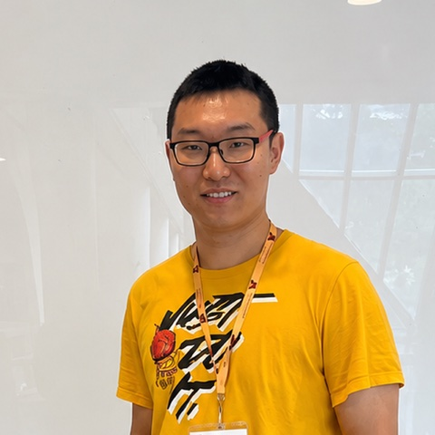

Xin Yao

Ph.D. Candidate, Electrical and Computer Engineering
University of Florida, Gainesville, FL, USA
Email: xyao@ufl.edu
Bio: I am a Ph.D. candidate in the Department of Electrical and Computer Engineering at the University of Florida, advised by Prof. Mingyue Ji. I began my Ph.D. at the University of Utah in Aug. 2021 and moved with my advisor's research group to the University of Florida in Aug. 2024. Before that, I received my M.S. in Electrical Engineering from George Washington University (2021) and my B.Eng. in Electronic Information Engineering from Tianjin University of Science and Technology (2019). My research lies at the intersection of machine learning, wireless communication systems, and information theory. I combine theoretical analysis with algorithm and system design to develop efficient, secure, and adaptive methods for distributed learning and dynamic network control, and evaluate them on real-world wireless testbeds that I build from the physical layer up.
Recent News
| 2026 | Our paper FORGE-LoRa: Joint per-Slot PHY Adaptation for Multi-Hop LoRa Networks (with A. Bhuyan and M. Ji) has been accepted; the presentation will take place in the National Capital Region, USA. |
| Jun. 2026 | Presented a poster on A-DEFEAT: An Adaptively Discounted Error-Feedback Algorithm for Decentralized Learning at the North American School of Information Theory (NASIT), Brigham Young University. |
| May 2026 | Presented Experimental Evaluation of Reinforcement Learning for Spectrum Sharing on a Real-Time LoRa Testbed at IEEE DySPAN 2026, Washington, DC. |
| Dec. 2025 | Gave a live demonstration of OSWireless and presented a poster on UnionLabs at the Warren B. Nelms Annual IoT Conference, University of Florida. |
| Oct. 2025 | Presented A Novel LDPP-MADDPG Approach for Distributed Power Allocation in mmWave Cellular Networks at the IEEE MILCOM 2025 6GSECC Workshop, Los Angeles, CA. |
| Dec. 2024 | Presented a poster on MADDPG-based power allocation using measurement data from POWDER at the Warren B. Nelms Annual IoT Conference, University of Florida. |
| Sept. 2024 | Our paper On the Information Theoretic Secure Aggregation with Uncoded Groupwise Keys was published in IEEE Transactions on Information Theory. |
| Aug. 2024 | Moved with Prof. Mingyue Ji's research group from the University of Utah to the University of Florida. |
| Jun. 2023 | Presented GroupSecAgg: Information Theoretic Secure Aggregation with Uncoded Groupwise Keys at IEEE ICC 2023, Rome, Italy. |
Research Overview
My research develops learning-driven and information-theoretic methods for real-world wireless systems. I combine theoretical analysis, including Lyapunov-based optimization, convergence analysis, and information-theoretic limits, with algorithm and system design, and I evaluate the resulting methods on wireless testbeds that I build from the physical layer up.
Real-World Wireless Testbeds (EdgeAI Lab)
I implement the physical-layer software stack of our group's wireless testbed in C++: modulation, demodulation, filtering, synchronization, channel encoding and decoding, and carrier-frequency and phase-offset correction. Python APIs on top of the C++ core enable scripted, repeatable over-the-air experiments, with automated workflows that adapt to heterogeneous physical-layer hardware. Our group's learning algorithms run on both lab-scale and building-scale deployments of the testbed.
UnionLabs: Shared Remote Access to NextG and IoT Testbeds
UnionLabs is an AWS-hosted platform for remote access and sharing of NextG and IoT testbeds. It includes a web interface deployed on AWS, physical-layer code for heterogeneous hardware such as USRP and LoRa, and a unified Union API that connects users' algorithms to the PHY code automatically. A single-command abstraction layer lets collaborators at different universities run their learning and optimization algorithms on multiple testbeds at the same time.
Learning-Driven Network Control
I derive optimization objectives with Lyapunov functions under real-world constraints, design state representations for reinforcement-learning control of communication systems, and deploy the resulting policies (Q-learning, DDPG, MADDPG) on live hardware. This includes spectrum sharing on a real-time LoRa testbed [C2], distributed power allocation in mmWave cellular networks [C3], and FORGE-LoRa [C1], which jointly adapts LoRa PHY parameters per slot and combines this with path discovery and optimization so that multi-hop communication stays live under interference and hardware outages.
Decentralized Learning and Secure Aggregation
A-DEFEAT is a decentralized learning algorithm with an adaptive error-feedback mechanism, together with the key proof technique for the adaptive mechanism and a convergence analysis that compares its rate with existing algorithms. Earlier, I studied the information-theoretic foundations of secure aggregation for federated learning when keys are shared, uncoded, among groups of users, and implemented and compared the proposed scheme against existing algorithms [C4, J1].
UAV Wireless Platform
Custom-assembled drones with integrated wireless communication payloads for airborne networking experiments: physical build, flight-controller initialization and tuning, payload design, and the communication protocol between ground devices and the airborne node.
Publications
My name is underlined. See also my Google Scholar profile.
Conference Papers
| [C1] | X. Yao, A. Bhuyan, and M. Ji, "FORGE-LoRa: Joint per-Slot PHY Adaptation for Multi-Hop LoRa Networks," National Capital Region, USA, 2026. (accepted, to appear) |
| [C2] | X. Yao, X. Wang, H. Zhang, and M. Ji, "Experimental Evaluation of Reinforcement Learning for Spectrum Sharing on a Real-Time LoRa Testbed," IEEE International Symposium on Spectrum Innovation (DySPAN), Washington, DC, USA, May 2026, pp. 1–8. |
| [C3] | X. Yao, A. Bhuyan, X. Zhang, and M. Ji, "A Novel LDPP-MADDPG Approach for Distributed Power Allocation in mmWave Cellular Networks," IEEE Military Communications Conference (MILCOM), 6G and Spectrum Security for Critical Communication (6GSECC) Workshop, Los Angeles, CA, USA, Oct. 2025. |
| [C4] | K. Wan, X. Yao, H. Sun, M. Ji, and G. Caire, "GroupSecAgg: Information Theoretic Secure Aggregation with Uncoded Groupwise Keys," IEEE International Conference on Communications (ICC), Rome, Italy, Jun. 2023, pp. 3890–3895. |
Journal Articles
| [J1] | K. Wan, X. Yao, H. Sun, M. Ji, and G. Caire, "On the Information Theoretic Secure Aggregation with Uncoded Groupwise Keys," IEEE Transactions on Information Theory, vol. 70, no. 9, pp. 6596–6619, Sept. 2024. |
Talks
| 2026 | FORGE-LoRa: Joint per-Slot PHY Adaptation for Multi-Hop LoRa Networks, conference presentation, National Capital Region, USA. (upcoming) |
| May 2026 | Experimental Evaluation of Reinforcement Learning for Spectrum Sharing on a Real-Time LoRa Testbed, IEEE International Symposium on Spectrum Innovation (DySPAN), Washington, DC, USA. |
| Oct. 2025 | A Novel LDPP-MADDPG Approach for Distributed Power Allocation in mmWave Cellular Networks, IEEE Military Communications Conference (MILCOM), 6GSECC Workshop, Los Angeles, CA, USA. |
| Jun. 2023 | GroupSecAgg: Information Theoretic Secure Aggregation with Uncoded Groupwise Keys, IEEE International Conference on Communications (ICC), Rome, Italy. |
| 2020 | High-Band Frequency Spectrum for 5G (team presentation), George Washington University, Washington, DC, USA. |
Posters & Demonstrations
| Jun. 2026 | A-DEFEAT: An Adaptively Discounted Error-Feedback Algorithm for Decentralized Learning (poster), North American School of Information Theory (NASIT), Brigham Young University, Provo, UT, USA. |
| Dec. 2025 | OSWireless: Automatic System to Maximize Network Throughputs (live demonstration), Warren B. Nelms Annual IoT Conference, University of Florida, Gainesville, FL, USA. |
| Dec. 2025 | UnionLabs: Shared Access to Heterogeneous Wireless IoT and Wireless OS Testbeds (poster), Warren B. Nelms Annual IoT Conference, University of Florida, Gainesville, FL, USA. |
| Dec. 2024 | MADDPG-Based Power Allocation Scheme Using Measurement Data from POWDER (poster), Warren B. Nelms Annual IoT Conference, University of Florida, Gainesville, FL, USA. |
Honors & Awards
| 2017 | Third-Prize Scholarship, Tianjin University of Science and Technology. |
| 2016 | Advanced Individual of Social Work, Tianjin University of Science and Technology. |
| 2016 | Excellent League Member, Tianjin University of Science and Technology. |